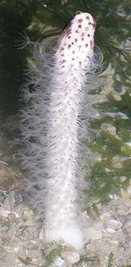
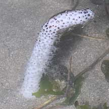
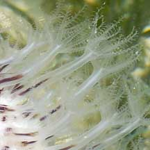
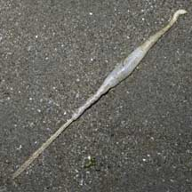
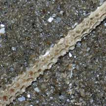
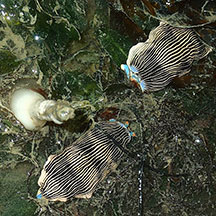

|
|
| sea pens text index | photo index |
| Phylum Cnidaria > Class Anthozoa > Subclass Alcyonaria/Octocorallia > Order Pennatulacea |
| Sea
pencil Lituaria sp. Family Veretillidae updated Dec 2019 Where seen? Resembling a white nose inhaler, this colony of animals on a stick is often seen on some of our Northern shores. Among seagrasses and in sandy areas near seagrasses. Sometimes in large numbers, especially in the dark. At sunrise, most are retracted into the ground. Elsewhere, these sea pens are found in deeper waters. Features: 4-10cm long. Cylindrical white primary polyp that is stiff with a blunt rounded tip. No leaf-like structures. The secondary polyps emerge directly from the primary polyp and are transparent with long body columns (about 1cm) and long branched tentacles. |
 Changi, May 11 |
 Changi, May 11.  Chek Jawa, Jul 05 |
 Half dead specimen washed ashore.  Skeleton of the central stalk Changi, May 06 |
| Pencil snacks? The Armina nudibranch eats sea pens, and sometimes, they can be seen near sea pencils. |
 Painted porcelain crab seen on a Sea pencil. Changi, Oct 07 Photo shared by Toh Chay Hoon on flickr. |
 Armina nudibranchs next to a Sea pencil. Changi, Jul 20 Photo shared by Toh Chay Hoon on facebook. |
*Species are difficult to positively identify without close examination.
On this website, they are grouped by external features for convenience of display.
| Sea pencils on Singapore shores |
On wildsingapore
flickr
|
| Other sightings on Singapore shores |
| Acknoweldgements Grateful thanks to Dr. Bjorn Berning and Dr Dennis P. Gordon for identifying this sea pen. Links
References
|